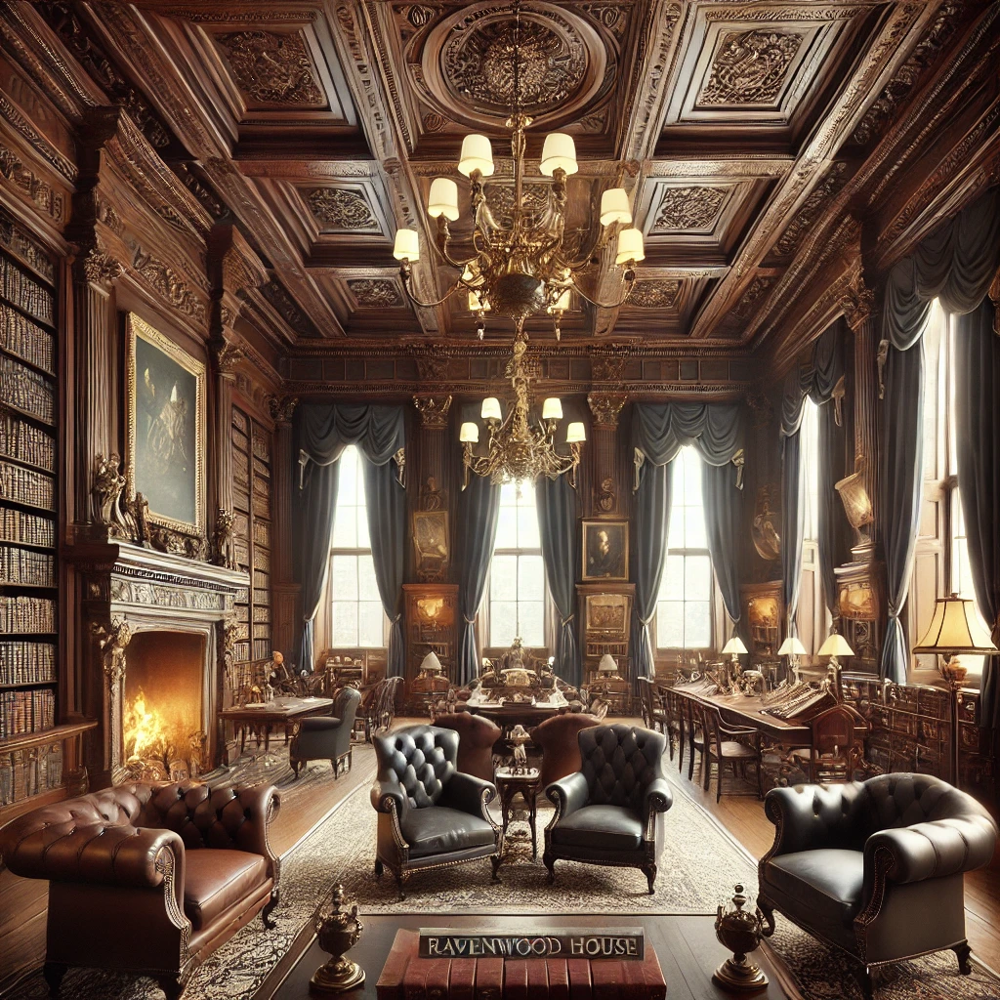

Ravenwood House Draft
Location Overview
Ravenwood House is the primary headquarters and operational base of the Order_of_St_Aelfric in London. An unassuming but stately townhouse in Mayfair, its elegant stone facade blends seamlessly with the grand residences of the aristocracy. The brass nameplate beside the door reads simply: Ravenwood House — nothing grand, nothing ostentatious. Yet as one steps onto the cobblestones, a subtle weight presses against the visitor, as though the very air carries something unspoken.
Publicly: An elite antiquarian society for scholars and collectors.
Beneath: A vast archive of forbidden tomes, occult symbols, and supernatural artefacts — and the seat of an organisation that has fought the supernatural since the 11th century.

The Public Rooms
Lady_Honoria_Lyndhurst lets herself in — she does not knock. The hushed warmth of the entry hall swallows visitors in an instant. The scent of aged paper, polished wood, and faint pipe smoke lingers beneath the more expected perfumes of beeswax and lavender oil.
A high-ceilinged foyer lined with dark wood panelling and oil paintings of solemn-faced scholars leads into the depths of the house. Gentlemen in fine coats sit reading by the hearth in an adjoining parlour, their conversations measured and subdued, as if nothing in this place is ever spoken too loudly.
A butler — impeccably dressed, silver-haired, and watchful — receives visitors with economy: “The Earl is expecting you.” No title. No embellishment. Just the Earl.
The Hidden Passage
At the far end of a narrow corridor, a bookcase stands against the wall. Pressing a particular spine tilts it forward with a quiet click, and the entire case shifts inward, revealing a hidden passageway descending into shadow.
The passage smells of old stone and candlewax, the air growing cooler with each step. Walls are lined with shelves of books, faded parchments, and curious trinkets locked behind glass cases. A single wrought-iron lantern swings overhead, casting shadows against sigils etched faintly into the stone archways — marks of protection, or perhaps warnings.
The Secret Chamber
At the bottom of the staircase, a heavy oak door opens onto a circular chamber where the scent of old vellum and ink thickens the air. A long wooden table dominates the room, scattered with manuscripts, an inkwell, and a half-drained glass of brandy. Shelves of forbidden texts loom overhead, their spines worn but their secrets intact. The air is thick with candle smoke curling in lazy tendrils beneath a vaulted ceiling, where an ancient chandelier flickers uncertainly.
This is where Lord_Percival_Harcourt receives those who have earned — or been compelled into — the Order’s confidence.
Key NPCs
- Lord_Percival_Harcourt (Earl of Wrexham) — Order commander, holds court in the secret chamber
- Lady_Honoria_Lyndhurst — Senior operative, comes and goes freely
- Butler — Silver-haired, watchful, unnamed
Campaign History
- Summer 1813: Marina_Garrick was brought here by Lady_Honoria_Lyndhurst after her recruitment in Portsmouth. Led through the hidden passage to the secret chamber, where Harcourt offered her the Order.
- Winter 1813: The investigators returned here for briefings during the training montage period at Hartwell_House.
- Chapter 0.5 (December 1813): The party was summoned here for briefing on the Drury Lane phenomena.
- Chapter 1 (June 1814): Mission briefing for the Stonehenge operation.
Keeper Notes
- Recurring Base: Investigators return to Ravenwood between investigations to report, seek resources, and receive new directives.
- Safe Space: For most of the campaign, Ravenwood is secure from cult interference. It is where investigators can plan and recover.
- Atmosphere: Make it feel prestigious and weighty. The public rooms are a gentleman’s club; the hidden chamber is something far older and more dangerous.
Relationships
- Located at Lord Percival Harcourt — Harcourt's base of operations and inner council chamber